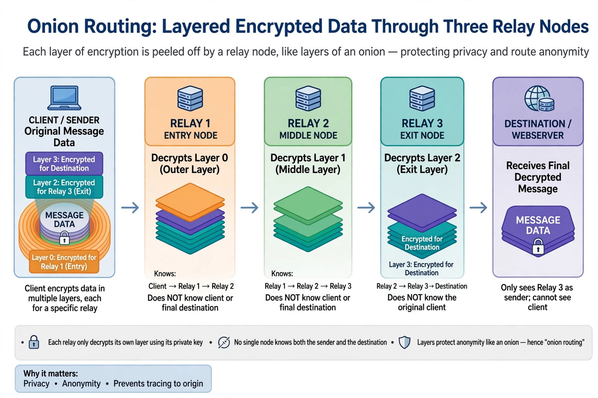

Tor is a free and open-source software implementation of onion routing, a technique for anonymous communication over a computer network. It directs Internet traffic through a volunteer overlay network of more than seven thousand relays to conceal a user's location and usage from anyone performing network surveillance or traffic analysis. The name is derived from the original project name, The Onion Router. Onion services (formerly "hidden services") make it possible to publish websites and other services without revealing the server's location.

| Tor | |
|---|---|
| Developer(s) | The Tor Project, Inc. |
| Initial release | 20 September 2002 |
| Written in | C, Rust, Python |
| Type | Overlay network, anonymity software |
| License | BSD 3-clause |
Onion routing was developed in the mid-1990s at the U.S. Naval Research Laboratory by Paul Syverson, Michael G. Reed and David Goldschlag to protect U.S. intelligence communications. Tor was released in 2002, and its source code was published under a free license the following year. In 2006 the Tor Project, a Massachusetts-based nonprofit, was founded to maintain it; early funding came from the U.S. government, which supported Tor as a tool for circumventing censorship abroad, alongside private donations and grants.
A Tor client builds a circuit through (typically) three relays chosen from a directory: an entry (guard) node, a middle relay, and an exit relay. Data is encrypted in successive layers — like the layers of an onion — so each relay knows only the previous and next hop, and no single relay knows both the origin and the destination. Exit relays decrypt the final layer and pass traffic to its destination on the open Internet. For onion services, both sides of the connection use Tor circuits and meet at a rendezvous point, so neither learns the other's network address.
Tor is used by journalists, activists, law-enforcement officers, whistleblowers and ordinary users in censored countries; the Tor Browser is the project's main distribution. The network is also associated with illicit activity, including cryptomarkets reached through onion services, and critics note that exit traffic can be observed by relay operators and that sophisticated adversaries performing end-to-end traffic correlation can weaken its anonymity guarantees. Several governments have attempted to block access to the network, countered by Tor's bridge relays and pluggable transports.
Onion routing · Anonymous communication · Internet censorship · Darknet · Edward Snowden
From Wikipedia, the free encyclopedia.